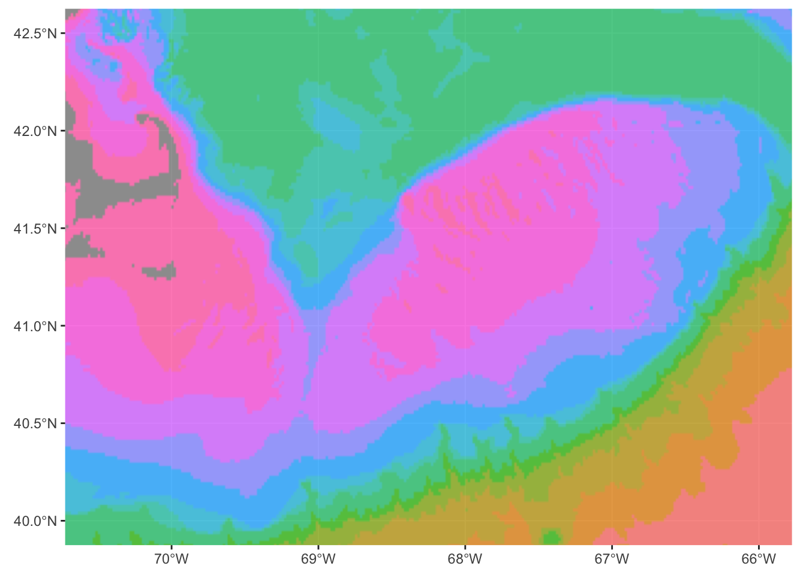
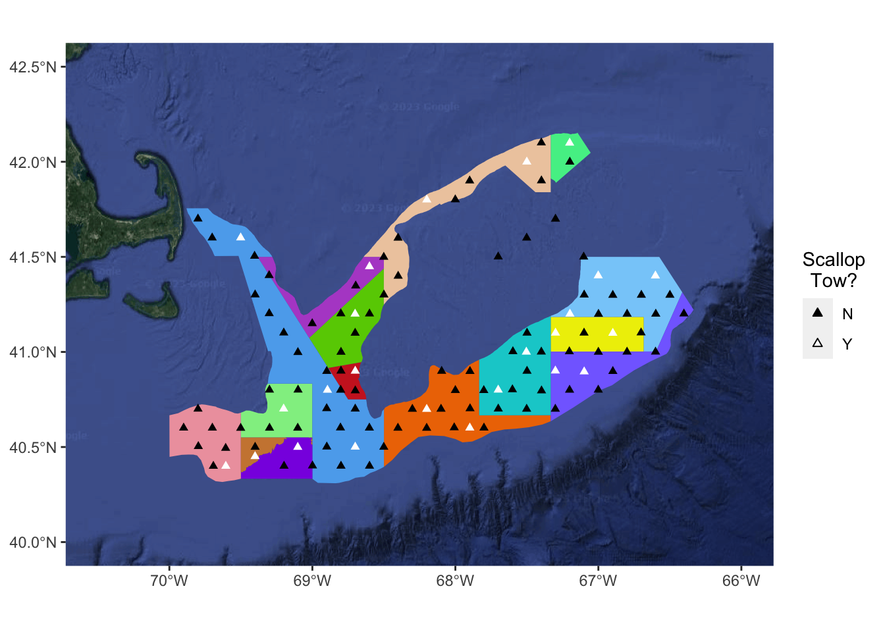

library(tidyverse)
library(sf)
library(ggmap)
library(marmap)
library(nngeo)Mapping Oceanographic Data with R
Goal: Plot spatial point and polygon data on a map created from a Google Earth image or from bathymetric data. As with other ggplot applications, this method of spatial visualisation provides widely flexible options for adding or modifying elements of a plot, such as in the example(s) below.
Libraries we’ll use
1) Build a basemap
a) …using bathymetric data
Import bathymetric data from NOAA’s ETOPO 2022 database
For more information on the getNOAA.bathy() function and a citation for the ETOPO 2022 data, see https://www.rdocumentation.org/packages/marmap/versions/1.0.10/topics/getNOAA.bathy.
GB_bathy <- getNOAA.bathy(lon1 = -74,
lon2 = -62,
lat1 = 37,
lat2 = 46,
resolution = 1)Querying NOAA database ...This may take seconds to minutes, depending on grid sizeBuilding bathy matrix ...Create map
When transforming the earth from its 3-D spherical shape to a 2-D shape, various distinct projections may be used depending on the scale and purposes of a given map. A Coordinate Reference System (CRS) defines how a specific two-dimensional projection relates to real places on the earth, and therefore is an important specification in geospatial mapping. Here, we use the most popular geodetic datum, WGS84 (World Geodetic System 1984), represented by the EPSG code 4326.
Note that the CRS is set in coord_sf() solely for the sake of formatting the limits; the ggbathy raster data is already set to WGS84/EPSG:4326.
# prepare data for mapping with ggplot
ggbathy <- GB_bathy %>%
fortify() %>%
mutate(depth_bins = cut(z,
breaks = c(0, -30, -55, -75, -90, -120, -150, -180,
-780, -1380, -1980, -2580, -3180, -Inf)))
Georges <- ggplot() +
geom_raster(data = ggbathy,
aes(x, y, fill = depth_bins),
interpolate = TRUE,
alpha = 0.75) +
coord_sf(xlim = c(-70.5, -66),
ylim = c(40, 42.5),
crs = st_crs(4326)) +
theme(axis.title = element_blank(),
legend.position = "none")
Georges
Change default colour scale to shades of blue
Georges <- Georges +
scale_fill_manual(values = c("#08306B", "#084184", "#08519C", "#1561A9",
"#2171B5", "#3282BE", "#4292C6", "#57A0CE",
"#6BAED6", "#85BCDC", "#9ECAE1", "#B2D3E8",
"#C6DBEF"))
GeorgesAdd higher-resolution coastline
GSHHG (Global Self-consistent, Hierarchical, High-resolution Geography) shoreline data can be downloaded from https://www.ngdc.noaa.gov/mgg/shorelines/data/gshhg/latest.
Spherical geometry is turned off because many polygons cannot be valid on S2 and R2 simultaneously, as outlined in https://r-spatial.org/book/04-Spherical.html#validity-on-the-sphere. (This is an excellent book for general referencing!)
About shapefiles
Unlike most text files, some spatial data formats include a set of several files. A shapefile is created by three or more files, all of which must have the same name and be stored in the same file directory in order for you to be able to work with them.
There are three key files associated with any and all shapefiles:
- .shp: the file that contains the geometry for all features.
- .shx: the file that indexes the geometry.
- .dbf: the file that stores feature attributes in a tabular format.
Sometimes, a shapefile will have other associated files including:
- .prj: the file that contains information on projection format including the coordinate system and projection information.
In short: to get a “shapefile” to load, you must have matching .shp, .shx, and .dbf files together in the same folder, each with the same file name. In these examples, we also have matching .prj files, which save us from having to assign a CRS to the shapefile ourselves.
The st_make_valid() function serves to resolve any areas of geometry that are not topologically valid and thus would raise a GEOS error. Another useful function not needed here, st_remove_holes() (from the package nngeo), similarly resolves issues such as false slivers of space between contiguous polygons.
(Also note that the order in which various elements are added determines the order in which they are layered onto the map: i.e., coastline on top of bathymetry.)
# turn off spherical geometry to avoid "duplicate vertex" errors
sf_use_s2(FALSE)Spherical geometry (s2) switched off# read shapefile from wherever the file set is located
mass <- read_sf("/Library/Frameworks/R.framework/Versions/4.2-arm64/Resources/library/gshhg-shp-2.3.7/GSHHS_shp/f/GSHHS_f_L1.shp") %>%
st_make_valid() %>%
st_crop(xmin = -71, xmax = -66, ymin = 40, ymax = 43)although coordinates are longitude/latitude, st_intersection assumes that they
are planarWarning: attribute variables are assumed to be spatially constant throughout
all geometries# add to map
Georges <- Georges +
geom_sf(data = mass, fill = "darkgrey", colour = "black") +
scale_fill_manual(values = c("#08306B", "#084184", "#08519C", "#1561A9",
"#2171B5", "#3282BE", "#4292C6", "#57A0CE",
"#6BAED6", "#85BCDC", "#9ECAE1", "#B2D3E8",
"#C6DBEF"),
na.value = "#C6DBEF") + # cleans up pixelated coastline edges from GB bathy
coord_sf(xlim = c(-70.5, -66), ylim = c(40, 42.5))Coordinate system already present. Adding new coordinate system, which will
replace the existing one.Scale for fill is already present.
Adding another scale for fill, which will replace the existing scale.Georgesb) …using a satellite image
Register Google API key
To obtain an API key and enable services, go to https://mapsplatform.google.com. (Also note that your API key should be kept secure, as sharing it publicly can open your account up to being compromised.)
My next code chunk is hidden here, but the function to register your API key in an R session takes the form register_google(key = "PERSONAL API KEY").
Extract satellite map from Google Maps
Right click on a Google Maps page to get coordinates. Also note that longitude comes first inside the coordinate parentheses.
Within get_map(), feel free to experiment with the other maptype options for maps sourced from Google or Stamen, examples here: https://r-graph-gallery.com/324-map-background-with-the-ggmap-library.html.
GB_map <- get_map(c(-68.5247, 40.8155),
maptype = "satellite",
zoom = 7,
source = "google")Create basemap
# create basemap using ggmap
satmap <- ggmap(GB_map) +
coord_sf(crs = st_crs(4326)) +
xlim(c(-70.5, -66)) +
ylim(c(40, 42.5)) +
theme(axis.title = element_blank())Coordinate system already present. Adding new coordinate system, which will
replace the existing one.
Scale for x is already present.
Adding another scale for x, which will replace the existing scale.
Scale for y is already present.
Adding another scale for y, which will replace the existing scale.satmapWarning: Removed 1 rows containing missing values (`geom_rect()`).2) Import point data and format for spatial use
Import cruise data
oct <- read.csv("~/Desktop/Repos/ScallopRSA2021/data/OctCruiseData.csv") %>%
rename(Lat = Latitude_degrees_start,
Long = Longitude_degrees_start) %>%
filter(Filtered == "",
Cast == "Bottom") %>%
mutate(Tow = ifelse(is.na(Tow_start_time), "N", "Y"))Convert coordinates from DM to DD
chd <- substr(oct$Lat, 3, 3)[1]
# latitude
Lat_split_oct <- str_split_fixed(oct$Lat, chd, 2) %>%
as.data.frame()
Lat_split_oct$V2 <- str_remove_all(Lat_split_oct$V2, pattern = "'") %>%
as.numeric()
Lat_split_oct$V2 <- Lat_split_oct$V2/60
Lat_split_oct$V1 <- as.numeric(Lat_split_oct$V1)
oct$Lat <- Lat_split_oct$V1 + Lat_split_oct$V2
rm(Lat_split_oct)
# longitude
Long_split_oct <- str_split_fixed(oct$Long, chd, 2) %>%
as.data.frame()
Long_split_oct$V2 <- str_remove_all(Long_split_oct$V2, pattern = "'") %>%
as.numeric()
Long_split_oct$V2 <- Long_split_oct$V2/60
Long_split_oct$V1 <- as.numeric(Long_split_oct$V1)
oct$Long <- -(Long_split_oct$V1 + Long_split_oct$V2)Data-dependent: Create a simple features object from cruise data
“Simple Features” is a commonly used set of GIS standards for storing and accessing data representing predominantly two-dimensional geographic features (e.g. points, lines, polygons).
station_sf <- st_as_sf(oct,
coords = c("Long", "Lat"),
crs = 4326)Plot points
# if you are using point data
Georges +
geom_point(data = oct, aes(x = Long, y = Lat), shape = 17)# if you created a simple features object
Georges +
geom_sf(data = station_sf, inherit.aes = FALSE, shape = 17) +
coord_sf(xlim = c(-70.5, -66), ylim = c(40, 42.5)) # (copied from above)Coordinate system already present. Adding new coordinate system, which will
replace the existing one.3) Import polygons and plot on map
Import shapefile of scallop fishing management zones
GB <- st_read("~/Desktop/Repos/ScallopRSA2021/data/SAM-zones/GB_Estimation_Areas_2019_UTM19_PDT_SFModified.shp")Reading layer `GB_Estimation_Areas_2019_UTM19_PDT_SFModified' from data source
`/Users/dylan/Desktop/Repos/ScallopRSA2021/data/SAM-zones/GB_Estimation_Areas_2019_UTM19_PDT_SFModified.shp'
using driver `ESRI Shapefile'
Simple feature collection with 15 features and 3 fields
Geometry type: MULTIPOLYGON
Dimension: XY
Bounding box: xmin: 415307.5 ymin: 4462120 xmax: 723467.9 ymax: 4668424
Projected CRS: NAD83 / UTM zone 19NNote that the innate CRS of this polygon collection is NAD83 / UTM zone 19N (which is EPSG:26919), not WGS 84; therefore it is important that we set the CRS to EPSG:4326 in coord_sf() in order to align with our existing basemap.
Plot polygons
Georges +
geom_sf(data = GB, fill = NA, colour = "black",
linewidth = 0.4, linetype = "dashed") +
coord_sf(xlim = c(-70.5, -66), ylim = c(40, 42.5), crs = st_crs(4326))Coordinate system already present. Adding new coordinate system, which will
replace the existing one.4) Back to the satellite map for fun!
Subset the fifteen SAM zones
NLS_North <- subset(GB, NewSAMS == "NLS-North")
CL1_South <- subset(GB, NewSAMS == "CL1-South")
CL1_Sliver <- subset(GB, NewSAMS == "CL1-Sliver")
CL2_AccessSoutheast <- subset(GB, NewSAMS == "CL2-Access-Southeast")
SF <- subset(GB, NewSAMS == "SF")
CL2_North <- subset(GB, NewSAMS == "CL2-North")
CL1_Access <- subset(GB, NewSAMS == "CL1-Access")
NF <- subset(GB, NewSAMS == "NF")
CL2_Ext <- subset(GB, NewSAMS == "CL2-Ext")
GSC <- subset(GB, NewSAMS == "GSC")
NLS_SouthDeep <- subset(GB, NewSAMS == "NLS-South-Deep")
NLS_West <- subset(GB, NewSAMS == "NLS-West")
NLS_SouthShallow <- subset(GB, NewSAMS == "NLS-South-Shallow")
CL2_AccessSouthwest <- subset(GB, NewSAMS == "CL2-Access-Southwest")
SF_East <- subset(GB, NewSAMS == "SF-East")Add polygons to map!
Note that to add an sf object to a ggmap image, the geom_sf() line needs to specify data = for the argument providing the sf object, in order to override ggplot’s assumption that the data argument carries down from the ggmap() line. The geom_sf() line also needs to include the argument inherit.aes = FALSE to avoid a conflict between the ggmap’s x and y aesthetics and the sf object’s geometry.
satmap <- satmap +
geom_sf(data = NLS_North, fill = "palegreen2",
col = "transparent", inherit.aes = FALSE) +
geom_sf(data = CL1_South, fill = "firebrick3",
col = "transparent", inherit.aes = FALSE) +
geom_sf(data = CL1_Sliver, fill = "mediumorchid3",
col = "transparent", inherit.aes = FALSE) +
geom_sf(data = CL2_AccessSoutheast, fill = "lightskyblue",
col = "transparent", inherit.aes = FALSE) +
geom_sf(data = SF, fill = "darkorange2",
col = "transparent", inherit.aes = FALSE) +
geom_sf(data = CL2_North, fill = "seagreen2",
col = "transparent", inherit.aes = FALSE) +
geom_sf(data = CL1_Access, fill = "chartreuse3",
col = "transparent", inherit.aes = FALSE) +
geom_sf(data = NF, fill = "peachpuff2",
col = "transparent", inherit.aes = FALSE) +
geom_sf(data = CL2_Ext, fill = "slateblue1",
col = "transparent", inherit.aes = FALSE) +
geom_sf(data = GSC, fill = "steelblue2",
col = "transparent", inherit.aes = FALSE) +
geom_sf(data = NLS_SouthDeep, fill = "blueviolet",
col = "transparent", inherit.aes = FALSE) +
geom_sf(data = NLS_West, fill = "lightpink2",
col = "transparent", inherit.aes = FALSE) +
geom_sf(data = NLS_SouthShallow, fill = "tan3",
col = "transparent", inherit.aes = FALSE) +
geom_sf(data = CL2_AccessSouthwest, fill = "yellow2",
col = "transparent", inherit.aes = FALSE) +
geom_sf(data = SF_East, fill = "darkturquoise",
col = "transparent", inherit.aes = FALSE) +
coord_sf(crs = st_crs(4326))Coordinate system already present. Adding new coordinate system, which will
replace the existing one.satmapWarning: Removed 1 rows containing missing values (`geom_rect()`).Overlay points on top; color points by a variable
Maps with a satellite background may be ideal for public dissemination – for example, a version of this map was used to provide scallop fishermen with a visual of our planned sampling track.
satmap +
geom_point(data = oct, aes(x = Long, y = Lat, col = Tow), shape = 17) +
scale_colour_manual(values = c("black", "white"), name = "Scallop\ntow?") +
guides(colour = guide_legend(title = "Scallop\nTow?",
title.hjust = 0.5,
override.aes = list(shape = c(24, 24),
col = c("black", "black"),
fill = c("black", "white"))))Warning: Removed 1 rows containing missing values (`geom_rect()`).
Do the same thing on the bathymetric map; increase color transparency
# set all polygon values to alpha = 0.75
Georges <- Georges +
geom_sf(data = NLS_North, fill = "palegreen2",
alpha = 0.75, col ="transparent", inherit.aes = FALSE) +
geom_sf(data = CL1_South, fill = "firebrick3",
alpha = 0.75, col ="transparent", inherit.aes = FALSE) +
geom_sf(data = CL1_Sliver, fill = "mediumorchid3",
alpha = 0.75, col ="transparent", inherit.aes = FALSE) +
geom_sf(data = CL2_AccessSoutheast, fill = "lightskyblue",
alpha = 0.75, col ="transparent", inherit.aes = FALSE) +
geom_sf(data = SF, fill = "darkorange2",
alpha = 0.75, col ="transparent", inherit.aes = FALSE) +
geom_sf(data = CL2_North, fill = "seagreen2",
alpha = 0.75, col ="transparent", inherit.aes = FALSE) +
geom_sf(data = CL1_Access, fill = "chartreuse3",
alpha = 0.75, col ="transparent", inherit.aes = FALSE) +
geom_sf(data = NF, fill = "peachpuff2",
alpha = 0.75, col ="transparent", inherit.aes = FALSE) +
geom_sf(data = CL2_Ext, fill = "slateblue1",
alpha = 0.75, col ="transparent", inherit.aes = FALSE) +
geom_sf(data = GSC, fill = "steelblue2",
alpha = 0.75, col ="transparent", inherit.aes = FALSE) +
geom_sf(data = NLS_SouthDeep, fill = "blueviolet",
alpha = 0.75, col ="transparent", inherit.aes = FALSE) +
geom_sf(data = NLS_West, fill = "lightpink2",
alpha = 0.75, col ="transparent", inherit.aes = FALSE) +
geom_sf(data = NLS_SouthShallow, fill = "tan3",
alpha = 0.75, col ="transparent", inherit.aes = FALSE) +
geom_sf(data = CL2_AccessSouthwest, fill = "yellow2",
alpha = 0.75, col ="transparent", inherit.aes = FALSE) +
geom_sf(data = SF_East, fill = "darkturquoise",
alpha = 0.75, col ="transparent", inherit.aes = FALSE) +
geom_point(data = oct, aes(x = Long, y = Lat, col = Tow), shape = 18, size = 2.5) +
scale_colour_manual(values = c("black", "white")) +
coord_sf(xlim = c(-70.5, -66), ylim = c(40, 42.5), crs = st_crs(4326))Coordinate system already present. Adding new coordinate system, which will
replace the existing one.GeorgesAdd dashed outline; edit y-axis
# combine SAM polygons into one polygon
GB_sf <- st_union(st_geometry(NLS_North), st_geometry(CL1_South)) %>%
st_union(st_geometry(CL1_Sliver)) %>%
st_union(st_geometry(CL2_AccessSoutheast)) %>%
st_union(st_geometry(SF)) %>%
st_union(st_geometry(CL2_North)) %>%
st_union(st_geometry(CL1_Access)) %>%
st_union(st_geometry(NF)) %>%
st_union(st_geometry(CL2_Ext)) %>%
st_union(st_geometry(GSC)) %>%
st_union(st_geometry(NLS_SouthDeep)) %>%
st_union(st_geometry(NLS_West)) %>%
st_union(st_geometry(NLS_SouthShallow)) %>%
st_union(st_geometry(CL2_AccessSouthwest)) %>%
st_union(st_geometry(SF_East)) %>%
st_remove_holes() # remove slivers between polygon borders
Georges +
geom_sf(data = GB_sf, fill = NA, colour = "black", linewidth = 0.4, linetype = "dashed") +
coord_sf(xlim = c(-70.5, -66), ylim = c(40, 42.5), crs = st_crs(4326)) +
scale_y_continuous(breaks = c(40, 41, 42))Coordinate system already present. Adding new coordinate system, which will
replace the existing one.Thanks so much for viewing! Please feel free to reach out to me at dylan.titmuss@whoi.edu with any questions or comments.